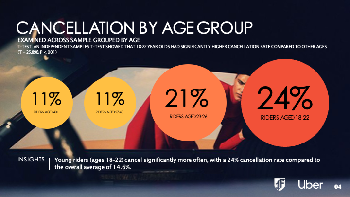
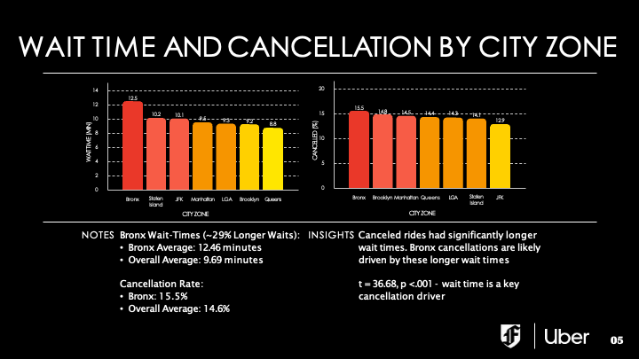

← Back to Projects
Case Study
Python (Pandas)
Data Visualization
 Python (Pandas)
Python (Pandas)
Uber NYC Rider Experience
Data-driven analysis of Uber ride performance across NYC zones and rider segments using Python.
Overview
Data-driven analysis of Uber ride performance across NYC zones and rider segments using Python.
Key Insights
- Riders aged 18–22 cancel significantly more often, with a 24 percent cancellation rate compared to the 14.6 percent overall average
- Wait time strongly influences cancellations, particularly in high-demand zones
- The Bronx shows the longest average wait times and highest cancellation rates, highlighting operational supply-demand imbalance
Tools Used
Python (Pandas)
Data Visualization
Business Takeaway
The analysis highlights a supply-demand imbalance across NYC zones and suggests a need for operational strategies that reduce rider wait times and improve service reliability in underserved areas.
Project Screenshots

